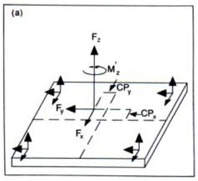
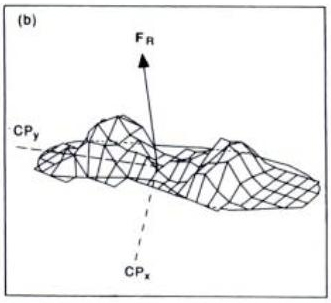
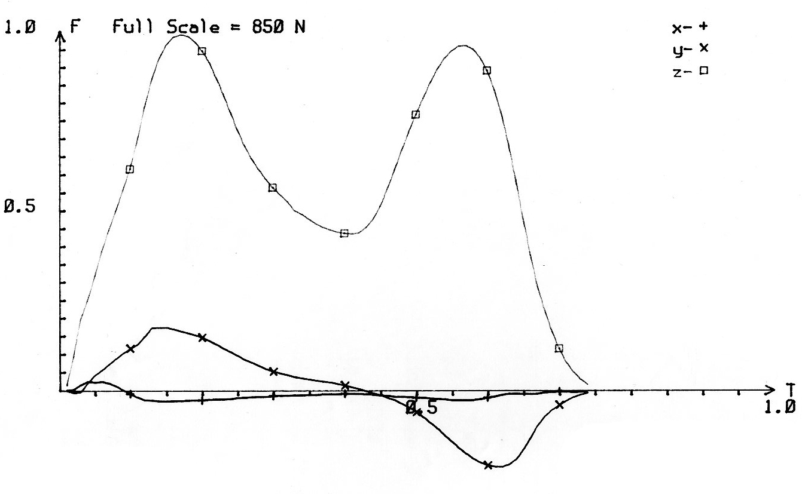
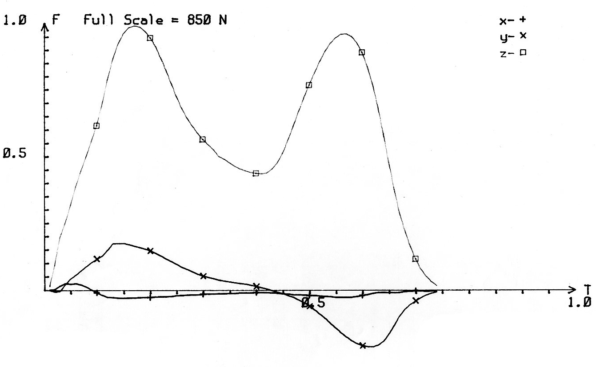
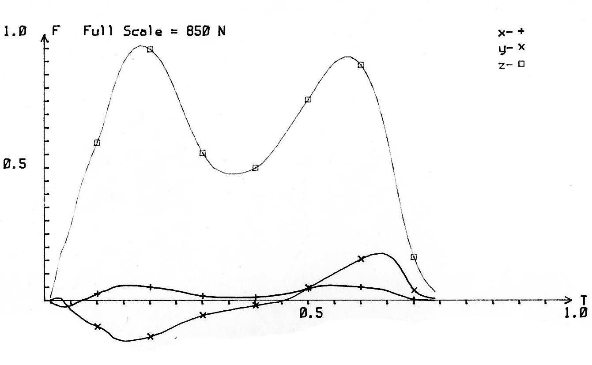
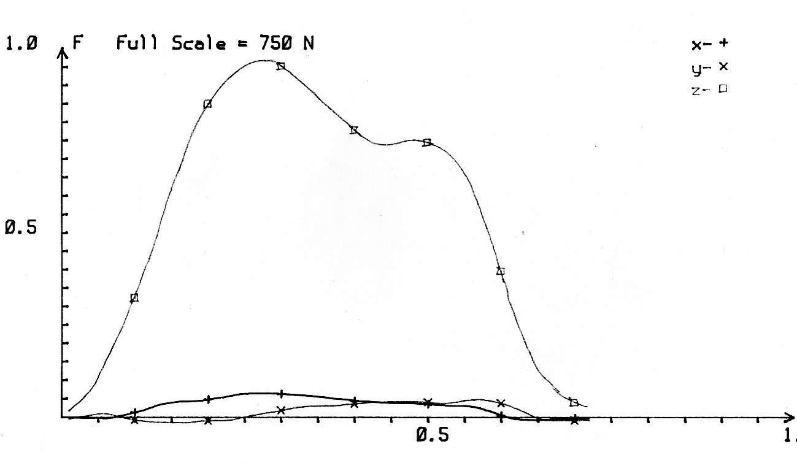
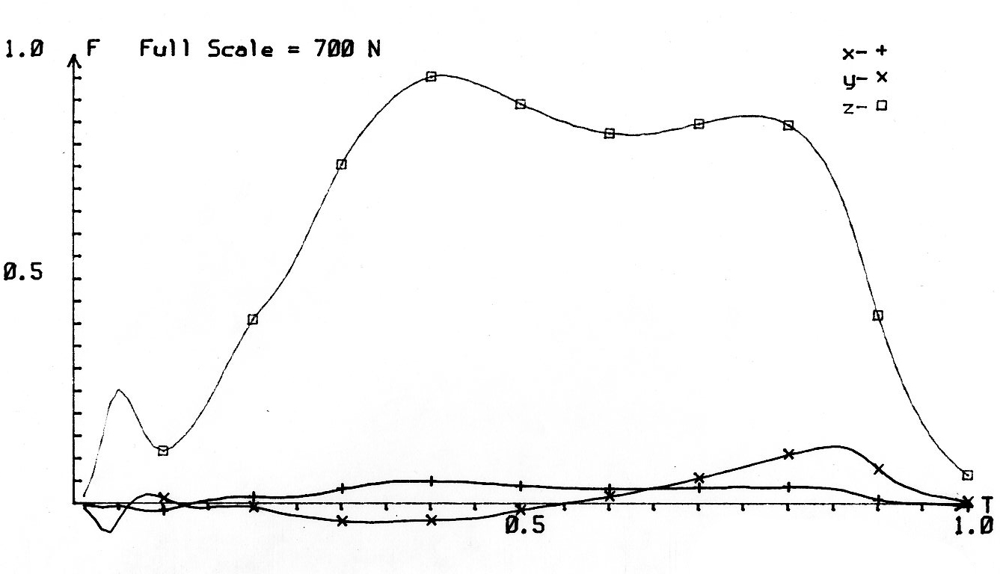

Force Plate Lab


There are three approaches to the analysis of human movement. These have been termed "subjective", "objective", and "predictive". The predictive approach asks the question: "What if ..." and involves computer simulations and forward dynamics that are covered in advanced topics. The objective approach involves measurement of kinematics and inverse dynamics to calculate forces and moments that cause movement and we will concentrate on this approach in subsequent labs. This lab is concerned with the subject analysis of human movement in which subjective estimates are made and biomechanical principles are applied without exact measurements and suffisticated equipment.
Assessment of Gait:
Podiatrists evaluate walking (gait) patterns before prescribing a shoe orthotic. Prothetists perform gait analysis to eveluate the effectiveness of an artificial limb. In this section, you will attempt to match the force plate record to the movement. The movements are as follows:
1) Healthy walk in the positive X direction;
2) Healthy walk in the negative X direction;
3) Weak knee;
4) Stiff knee;
5) Drop Foot;
6)
 




